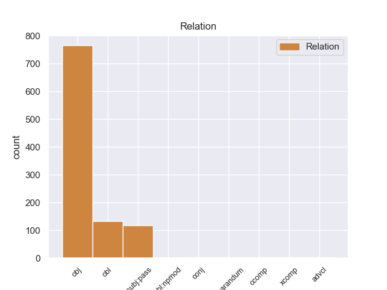
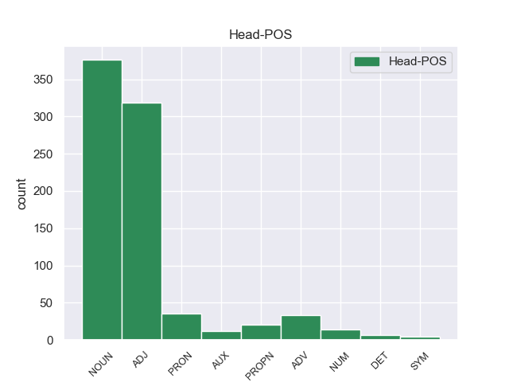
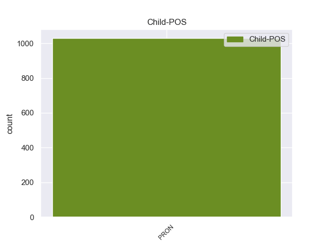

Distribution of features within this leaf



non-conforming Examples:
1 Al _ _ _ _ 0 _ _ _
2 - _ _ _ _ 0 _ _ _
3 Zaman _ _ _ _ 0 _ _ _
4 : _ _ _ _ 0 _ _ _
5 Guerrillas _ _ _ _ 0 _ _ _
6 killed _ _ _ _ 0 _ _ _
7 a _ _ _ _ 0 _ _ _
8 member _ _ _ _ 0 _ _ _
9 of _ _ _ _ 0 _ _ _
10 the _ _ _ _ 0 _ _ _
11 Kurdistan _ _ _ _ 0 _ _ _
12 Democratic _ _ _ _ 0 _ _ _
13 Party _ _ _ _ 0 _ _ _
14 after _ _ _ _ 0 _ _ _
15 kidnapping kidnap VERB VBG VerbForm=Ger 0 _ _ _
16 him he PRON PRP Case=Acc|Gender=Masc|Number=Sing|Person=3|PronType=Prs 15 obj 15:obj _
17 in _ _ _ _ 0 _ _ _
18 Mosul _ _ _ _ 0 _ _ _
19 . _ _ _ _ 0 _ _ _
1 And _ _ _ _ 0 _ _ _
2 there _ _ _ _ 0 _ _ _
3 is _ _ _ _ 0 _ _ _
4 nothing _ _ _ _ 0 _ _ _
5 we _ _ _ _ 0 _ _ _
6 can _ _ _ _ 0 _ _ _
7 do do VERB VB VerbForm=Inf 0 _ _ _
8 about _ _ _ _ 0 _ _ _
9 it it PRON PRP Case=Acc|Gender=Neut|Number=Sing|Person=3|PronType=Prs 7 obl 7:obl:about _
10 really _ _ _ _ 0 _ _ _
11 , _ _ _ _ 0 _ _ _
12 people _ _ _ _ 0 _ _ _
13 who _ _ _ _ 0 _ _ _
14 are _ _ _ _ 0 _ _ _
15 suggesting _ _ _ _ 0 _ _ _
16 that _ _ _ _ 0 _ _ _
17 we _ _ _ _ 0 _ _ _
18 go _ _ _ _ 0 _ _ _
19 out _ _ _ _ 0 _ _ _
20 and _ _ _ _ 0 _ _ _
21 fight _ _ _ _ 0 _ _ _
22 them _ _ _ _ 0 _ _ _
23 are _ _ _ _ 0 _ _ _
24 living _ _ _ _ 0 _ _ _
25 in _ _ _ _ 0 _ _ _
26 dream _ _ _ _ 0 _ _ _
27 land _ _ _ _ 0 _ _ _
28 . _ _ _ _ 0 _ _ _
1 There _ _ _ _ 0 _ _ _
2 are _ _ _ _ 0 _ _ _
3 rumours _ _ _ _ 0 _ _ _
4 about _ _ _ _ 0 _ _ _
5 preparations _ _ _ _ 0 _ _ _
6 by _ _ _ _ 0 _ _ _
7 slum _ _ _ _ 0 _ _ _
8 dwellers _ _ _ _ 0 _ _ _
9 for _ _ _ _ 0 _ _ _
10 another _ _ _ _ 0 _ _ _
11 looting _ _ _ _ 0 _ _ _
12 spree _ _ _ _ 0 _ _ _
13 against _ _ _ _ 0 _ _ _
14 banks _ _ _ _ 0 _ _ _
15 , _ _ _ _ 0 _ _ _
16 governmental _ _ _ _ 0 _ _ _
17 and _ _ _ _ 0 _ _ _
18 public _ _ _ _ 0 _ _ _
19 property _ _ _ _ 0 _ _ _
20 similar _ _ _ _ 0 _ _ _
21 to _ _ _ _ 0 _ _ _
22 the _ _ _ _ 0 _ _ _
23 one _ _ _ _ 0 _ _ _
24 that _ _ _ _ 0 _ _ _
25 took _ _ _ _ 0 _ _ _
26 place _ _ _ _ 0 _ _ _
27 last _ _ _ _ 0 _ _ _
28 April _ _ _ _ 0 _ _ _
29 , _ _ _ _ 0 _ _ _
30 and _ _ _ _ 0 _ _ _
31 I _ _ _ _ 0 _ _ _
32 have _ _ _ _ 0 _ _ _
33 already _ _ _ _ 0 _ _ _
34 overheard _ _ _ _ 0 _ _ _
35 youngsters _ _ _ _ 0 _ _ _
36 in _ _ _ _ 0 _ _ _
37 my _ _ _ _ 0 _ _ _
38 neighbourhood _ _ _ _ 0 _ _ _
39 joking joke VERB VBG VerbForm=Ger 0 _ _ _
40 about _ _ _ _ 0 _ _ _
41 it it PRON PRP Case=Acc|Gender=Neut|Number=Sing|Person=3|PronType=Prs 39 obl 39:obl:about _
42 and _ _ _ _ 0 _ _ _
43 saying _ _ _ _ 0 _ _ _
44 things _ _ _ _ 0 _ _ _
45 like _ _ _ _ 0 _ _ _
46 " _ _ _ _ 0 _ _ _
47 This _ _ _ _ 0 _ _ _
48 time _ _ _ _ 0 _ _ _
49 we _ _ _ _ 0 _ _ _
50 will _ _ _ _ 0 _ _ _
51 be _ _ _ _ 0 _ _ _
52 the _ _ _ _ 0 _ _ _
53 first _ _ _ _ 0 _ _ _
54 to _ _ _ _ 0 _ _ _
55 loot _ _ _ _ 0 _ _ _
56 , _ _ _ _ 0 _ _ _
57 we _ _ _ _ 0 _ _ _
58 did _ _ _ _ 0 _ _ _
59 n't _ _ _ _ 0 _ _ _
60 get _ _ _ _ 0 _ _ _
61 anything _ _ _ _ 0 _ _ _
62 the _ _ _ _ 0 _ _ _
63 last _ _ _ _ 0 _ _ _
64 time _ _ _ _ 0 _ _ _
65 " _ _ _ _ 0 _ _ _
66 . _ _ _ _ 0 _ _ _
1 " _ _ _ _ 0 _ _ _
2 They _ _ _ _ 0 _ _ _
3 are _ _ _ _ 0 _ _ _
4 targetting _ _ _ _ 0 _ _ _
5 ambulances _ _ _ _ 0 _ _ _
6 " _ _ _ _ 0 _ _ _
7 , _ _ _ _ 0 _ _ _
8 " _ _ _ _ 0 _ _ _
9 American _ _ _ _ 0 _ _ _
10 snipers _ _ _ _ 0 _ _ _
11 are _ _ _ _ 0 _ _ _
12 shooting _ _ _ _ 0 _ _ _
13 children _ _ _ _ 0 _ _ _
14 and _ _ _ _ 0 _ _ _
15 pregnant _ _ _ _ 0 _ _ _
16 women _ _ _ _ 0 _ _ _
17 " _ _ _ _ 0 _ _ _
18 , _ _ _ _ 0 _ _ _
19 and _ _ _ _ 0 _ _ _
20 " _ _ _ _ 0 _ _ _
21 They _ _ _ _ 0 _ _ _
22 are _ _ _ _ 0 _ _ _
23 using _ _ _ _ 0 _ _ _
24 cluster _ _ _ _ 0 _ _ _
25 bombs _ _ _ _ 0 _ _ _
26 against _ _ _ _ 0 _ _ _
27 civilians _ _ _ _ 0 _ _ _
28 " _ _ _ _ 0 _ _ _
29 is _ _ _ _ 0 _ _ _
30 all _ _ _ _ 0 _ _ _
31 you _ _ _ _ 0 _ _ _
32 get _ _ _ _ 0 _ _ _
33 to _ _ _ _ 0 _ _ _
34 hear hear VERB VB VerbForm=Inf 0 _ _ _
35 from _ _ _ _ 0 _ _ _
36 him he PRON PRP Case=Acc|Gender=Masc|Number=Sing|Person=3|PronType=Prs 34 obl 34:obl:from SpaceAfter=No
37 . _ _ _ _ 0 _ _ _
1 Someone _ _ _ _ 0 _ _ _
2 who _ _ _ _ 0 _ _ _
3 called call VERB VBD Mood=Ind|Tense=Past|VerbForm=Fin 0 _ _ _
4 himself himself PRON PRP Case=Acc|Gender=Masc|Number=Sing|Person=3|PronType=Prs|Reflex=Yes 3 obj 3:obj|5:nsubj:xsubj _
5 Abu _ _ _ _ 0 _ _ _
6 Hafs _ _ _ _ 0 _ _ _
7 from _ _ _ _ 0 _ _ _
8 the _ _ _ _ 0 _ _ _
9 Ibn _ _ _ _ 0 _ _ _
10 Al _ _ _ _ 0 _ _ _
11 - _ _ _ _ 0 _ _ _
12 Khattab _ _ _ _ 0 _ _ _
13 Brigades _ _ _ _ 0 _ _ _
14 ( _ _ _ _ 0 _ _ _
15 another _ _ _ _ 0 _ _ _
16 new _ _ _ _ 0 _ _ _
17 group _ _ _ _ 0 _ _ _
18 ) _ _ _ _ 0 _ _ _
19 was _ _ _ _ 0 _ _ _
20 on _ _ _ _ 0 _ _ _
21 Al _ _ _ _ 0 _ _ _
22 - _ _ _ _ 0 _ _ _
23 Jazeera _ _ _ _ 0 _ _ _
24 describing _ _ _ _ 0 _ _ _
25 the _ _ _ _ 0 _ _ _
26 enormous _ _ _ _ 0 _ _ _
27 casualties _ _ _ _ 0 _ _ _
28 among _ _ _ _ 0 _ _ _
29 the _ _ _ _ 0 _ _ _
30 Marines _ _ _ _ 0 _ _ _
31 and _ _ _ _ 0 _ _ _
32 he _ _ _ _ 0 _ _ _
33 sweared _ _ _ _ 0 _ _ _
34 that _ _ _ _ 0 _ _ _
35 American _ _ _ _ 0 _ _ _
36 soldiers _ _ _ _ 0 _ _ _
37 were _ _ _ _ 0 _ _ _
38 mutilating _ _ _ _ 0 _ _ _
39 the _ _ _ _ 0 _ _ _
40 bodies _ _ _ _ 0 _ _ _
41 of _ _ _ _ 0 _ _ _
42 dead _ _ _ _ 0 _ _ _
43 insurgents _ _ _ _ 0 _ _ _
44 . _ _ _ _ 0 _ _ _